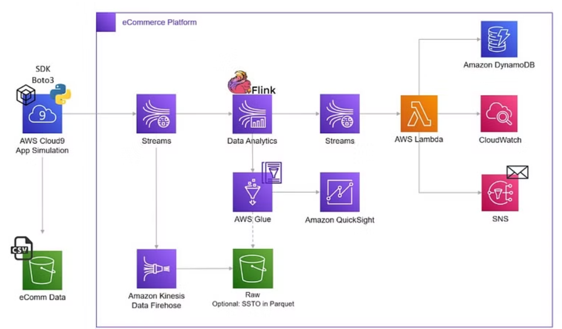

An e-commerce analytics platform serves as the backbone of the data-driven decision-making in online retail. By harnessing data from various souces, such as transaction logs, customer interactions, and website traffic, business can:
- identify trends and patterns in customer purchasing behaviour
- Optimize pricing strategies to maximize revenue
- Improve customer retention through personalized recommendations
- Detect anomalies that may signal fraudalent activities or distributed denial of service (DDoS) and bott attacks
Introduction
In this blog, I will walk you through how I built an ETL pipeline for eCommerce analytics using AWS services. This project mimics real-life scenarios by leveraging Amazon Kinesis for real-time data streaming and processing. We will build a pipeline that ingests data in real-time from simulated user clickstreams and processes it using various AWS services to generate insights on user behavior, product trends, and more.
Real-Time Processing: Defending Against DDoS and Bot Attacks
Real-time processing is essential for safeguarding your e-commerce platform, especially in the face of increasing threats like DDoS attacks and bot-driven traffic spikes. These attacks can harm your business by disrupting services, slowing down the platform, or inflating costs.
To address these challenges, we will leverage AWS services such as AWS Lambda, Amazon DynamoDB, Amazon CloudWatch, and AWS SNS to build an automated pipeline that detects and mitigates these attacks in real-time.
Key Components of the Real-Time Processing Pipeline:
AWS Lambda: Handles the real-time execution of code to process incoming traffic data, detect anomalies, and trigger alerts.
Amazon DynamoDB: Stores real-time traffic data, allowing rapid lookups and comparisons to identify suspicious patterns.
Amazon CloudWatch: Monitors traffic and application performance, enabling detection of unusual activity, such as traffic spikes indicative of bot or DDoS attacks.
AWS SNS (Simple Notification Service): Sends instant notifications to administrators or security teams when abnormal traffic patterns are detected, allowing immediate action.
This real-time processing pipeline ensures your e-commerce platform remains secure, stable, and ready to scale while mitigating potential threats in real time.
Batch-Time Processing: Gaining deep insights into customer behavior, product trends, and overall business performance.
Batch processing is ideal for analyzing large volumes of historical data, enabling businesses to extract valuable insights that drive strategic decisions. In this blog, we’ll design a batch processing pipeline using Amazon Kinesis, AWS Glue, Amazon S3, and Amazon QuickSight. This architecture will provide insights into key metrics such as unique daily visitors, product engagement trends, and category performance.
Key Components of the Batch Processing Pipeline:
Amazon Kinesis: Ingests real-time streaming data from various e-commerce sources, such as user activity logs, transaction records, and website events. This data is then batched and stored for further processing.
AWS Glue: Extracts, transforms, and loads (ETL) data from the ingested raw data, ensuring it is properly formatted and cleaned. AWS Glue automates the schema discovery process and builds data catalog tables, making it easy to transform data into an analytics-ready state.
Amazon S3: Acts as the data lake, where the processed and cleaned data is stored. Amazon S3 provides scalable and cost-effective storage for large datasets, making it ideal for handling the volume of data generated by an e-commerce platform.
Amazon QuickSight: A powerful visualization tool that connects to the data in Amazon S3 and creates dashboards and reports. QuickSight enables you to visualize key metrics, such as traffic trends, top categories, and brand performance, in an easy-to-digest format. Decision-makers can use these reports to track KPIs, identify patterns, and make data-driven decisions.
AWS Services
Before we dive into the service, I would like to credit the data source we used in this project which can be found here.
AWS Introduction
Amazon S3: A scalable, secure object storage service for saving and retrieving unlimited data from anywhere, at any time.
AWS Glue: A serverless data integration service for ETL tasks, enabling data discovery, preparation, and merging for analytics and machine learning. It runs Spark/Python code without infrastructure management, charging based on job runtime and data catalog storage. Users often leverage Crawlers to automatically update tables in the AWS Glue Data Catalog.
AWS Athena: A serverless, interactive query service for querying data stored in S3, supporting multiple formats like CSV, JSON, ORC, Parquet, and AVRO.
Apache Flink: A scalable platform for real-time data analytics and distributed processing, handling both unbounded (continuous) and bounded (batch) data streams, with built-in fault tolerance and in-memory computation.
Amazon Kinesis Data Streams: A real-time data collection and processing service that supports building custom data-processing applications. Kinesis Data Firehose simplifies data delivery to destinations and can also transform data before sending.
Amazon QuickSight: A scalable, serverless business intelligence service powered by machine learning. It supports pay-per-session pricing, connects to diverse data sources, and delivers interactive dashboards and reports.
AWS Glue DataBrew: A visual data preparation tool that simplifies cleaning and transforming data without code, offering pre-built transformations for faster data prep.
Amazon DynamoDB: A fully managed NoSQL database providing fast, predictable performance with seamless scaling, designed to handle any volume of data and traffic without downtime.
Architecture

The raw data stream will first be ingested into Amazon Kinesis Data Stream (stream1), which will then stream the data to Amazon Kinesis Data Analytics for processing. Here, an Apache Flink application will be utilized to analyze the data and detect any potential DDoS attacks. The clean, filtered data will then be sent to another Amazon Kinesis Data Stream (stream2).
The Flink application will be built using SQL on Amazon Kinesis Data Analytics, and to manage metadata, we will use the AWS Glue Data Catalog.
Next, stream2 will trigger an AWS Lambda function that will send Amazon SNS notifications to stakeholders, and fraudulent transaction details will be logged in a DynamoDB table for further analysis.
However, as seen in the architecture diagram, the raw data entering Kinesis Data Stream (stream1) is not stored anywhere. This presents a challenge: if a bug is later found and fixed in the Apache Flink application, the previously processed data cannot be re-processed, as we have no backup of the raw data. To mitigate this, it’s essential to store a copy of the raw data for future reprocessing or batch processing.
To address this, we will also route the incoming stream from Kinesis Data Stream (stream1) to Kinesis Firehose, which will store the raw data in Amazon S3. Using AWS Glue, we will catalog this data and run Glue ETL jobs to clean and process it. This enables us to further analyze the data through Amazon Athena and leverage QuickSight to build insightful dashboards for visualization.
Data Stream and Simulation Setup
Creating a Data Stream
- Navigate to AWS Kinesis and select “Create Data Stream.”
- Name the data stream: ecommerce-raw-user-activity-stream-1.
- Set the capacity mode to “On-Demand” for variable throughput requirements.
Running the Simulation Python App Using Kinesis Stream
If you don’t have a local IDE, use AWS Cloud9, a cloud-based IDE for coding, running, and debugging:
- Create a Cloud9 Environment: Name: cloud9-ecommerce-ide-dev-1 Instance Type: t3.small (2 GiB RAM + 2 vCPU) Platform: Amazon Linux 2 Cost-Saving Setting: Automatically stop after 30 minutes of inactivity
- Set Up Permissions: Create an IAM role for Cloud9 with permissions to access Kinesis and S3: Role Name: ecommerce-ec2-simulation-app-iam-role Policies: AmazonS3FullAccess, AmazonKinesisFullAccess Attach this IAM role to your Cloud9 instance.
- Simulation Setup: Create a new folder in Cloud9: ecomm-simulation-app-v1. Save the simulation code as stream-data-app-simulation.py in this folder. Install additional packages if needed: pip install boto3 -t .. The simulation app will write to the Kinesis stream and read from an S3 bucket. The default retention period for the data stream is 1 day.
Using AWS Glue and Athena for Kinesis Partition Key
- Partition Key Selection: Read data from CSV in S3 and push it to Kinesis in JSON format. Choose a partition key with good cardinality (e.g., category_id), aiming for a balanced load across shards.
- AWS Glue: Create a Glue Crawler to define the schema: - Crawler Name: ecommerce-user-activity-crawler-1 - Source Type: Data stores (S3) - Include Path: ecommerce-raw-euwest1-14317-dev/ecomm_user_activity_sample - IAM Role: AWSGlueServiceRole-ecommerce-user-activity - Database Name: db_ecommerce Run the crawler to create a table. This will allow querying in Athena.
Configuring Kinesis Data Analytics with Apache Flink
- Kinesis Data Analytics:
Allows real-time analytics on streaming data.
Supports multiple data sources and output sinks.
- Apache Flink:
A framework for stateful computations on unbounded and bounded data streams.
- Set Up Kinesis Data Analytics:
- Create a new data stream: ecommerce-raw-user-activity-stream-2.
- Go to AWS Kinesis -> Analytics Applications -> Studio -> Create Studio Notebook:
Notebook Name: ecommerce-streaming-app-v1
Runtime: Apache Flink 1.13
Source: ecommerce-raw-user-activity-stream-1
Destination: ecommerce-raw-user-activity-stream-2
S3 Code Destination: ecommerce-raw-euwest1-14317-dev
- Apache Flink App:
Ensure IAM role permissions for Glue are set.### Lambda Functions for Data Processing - Create Lambda Functions: Set up Lambda to read from the second stream and write to DynamoDB, CloudWatch, and SNS. - Lambda Configuration: Permissions: Attach policies for CloudWatch, DynamoDB, Kinesis, and SNS. Environment Variables: cloudwatch_metric: ecomm-user-high-volume-events cloudwatch_namespace: ecommerce-namespace-1 dynamodb_control_table: ddb-ecommerce-tab-1 topic_arn: [Your SNS Topic ARN] Create SNS Topic: Name: ecommerce-high-severity-incidents Subscription: Email-JSON DynamoDB Table: Table Name: Same as dynamodb_control_table Partition Key: ddb_partition_key (String) Sort Key: ddb_sort_key (Number)
Integrate Lambda and Kinesis
In Lambda, add a trigger for ecommerce-raw-user-activity-stream-2 with a batch size of 1.ETL with AWS Glue Studio, DataBrew, and Apache Spark
- Convert CSV to Parquet:
Use AWS Glue Studio to create a job that reads CSV from S3, transforms it, and writes Parquet files back to S3.
- Use DataBrew:
Create a data profile to determine optimal partition key variables.Persist Raw Stream Data with Amazon Kinesis Firehose
Preserve raw data in S3 to ensure no loss during analytics processes.QuickSight Configuration
Go to QuickSight -> Enterprise Edition.
Manage permissions to access the relevant S3 bucket.Citation
@online{voon2024,
author = {Voon, Sharon},
title = {End-to-End {Real-Time} {eCommerce} {Analytics} {Pipeline}
Using {AWS}},
date = {2024-02-11},
url = {https://s-voon.github.io/blogs/ecommerce_analytics/},
langid = {en}
}